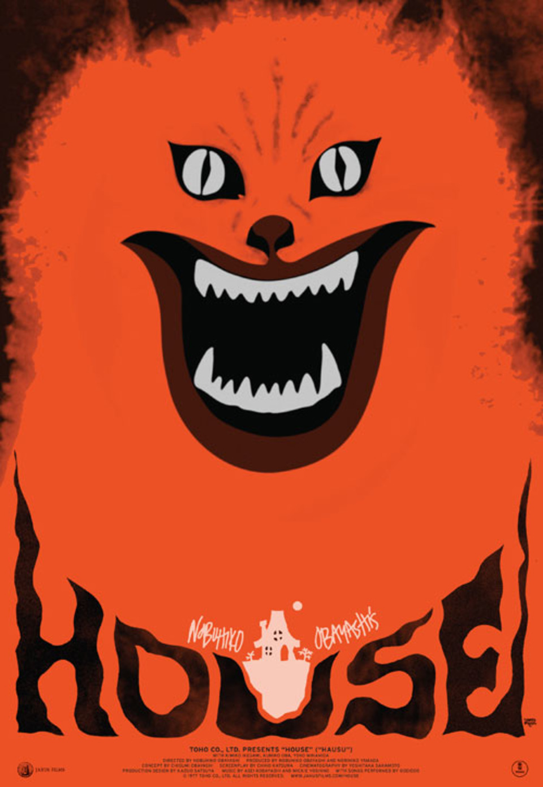

On this list, I have five horror movies that are the best to watch for October or whenever. Although not every movie is on here, there will be enough variation from diffrent countries.
| Movie Name | Ranking | Descprtion | ||
|---|---|---|---|---|
| Demons(1985) | 5 | In Italy, groups of patrons are given tickets to see a movie. But, while watching the movie, things go amiss in the theater. This movie is a cult classic, with its punk soundtrack and amazing visuals. | ||
| House(1977) | 4 |  | Have you ever taken drugs? If not, then this movie will show you how it feels. Gorgeous and the rest of her five friends go visit her aunt in the countryside after a spat with her father. But there are many surprises when they go to the house. This Japanese film was the idea of the director's thirteen-year-old daughter. Besides the craziness, the soundtrack and visual effects are amazing. | |
| Return of the Livng Dead(1985) | 3 | Do you enjoy death? Has your work life become dull? Then this movie is for you. On July 3, 1985, in Kentucky, the world was over. When two workers at a medical facility company break an ARMY container, hell on earth begins to consume the world. If you like zombie movies, this one is for you. As the previous movie above, the soundtrack is incredible punk 80s music that you want to listen to again. | ||
| Gonjiam: Haunted Asylum(2018) | 2 | |
When a group of Korean volgers test thier fear for views, these volgers get more than they bargin for. This movie is one of the most scariest movie I have ever see. I dare you to watch this movie in the dark. | |
| Tales from the Hood | 1 | This movie is one of my favorite horror movies of all time. It focuses on the Black community and what they go through, by ampylify it into horror. It speaks volumes that this movie is still relevenat in these troubing times |